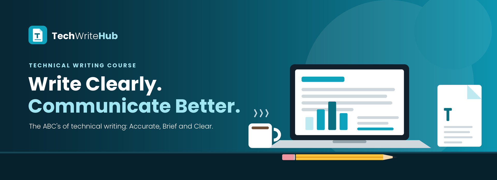

Welcome to our Technical Writing educational resource. This website presents the core concepts of technical writing — from definitions and the ABCs of writing, to outlining, report types, English structure, letters, and graphic aids.
Explore Lectures
Technical writing transforms complex information into clear, accurate, and usable content. It powers user manuals, research reports, business proposals, and everyday professional communication.
Technical writing removes ambiguity and delivers precise information readers can act on.
Facts, data, and procedures must be verified and presented without distortion or bias.
Effective technical writing is tailored to the reader's knowledge, needs, and context.
Seven core lectures covering the foundations of technical writing.
What technical writing is, its characteristics, and why it matters.
Open LectureThe alphabet of writing principles — accuracy, brevity, clarity, and more.
Open LectureReports, proposals, abstracts, and other technical documents.
Open LectureParts of speech, sentence patterns, parallelism, and agreement.
Open LectureStart with Lecture 1 and work your way through all seven topics at your own pace.
Go to Lectures